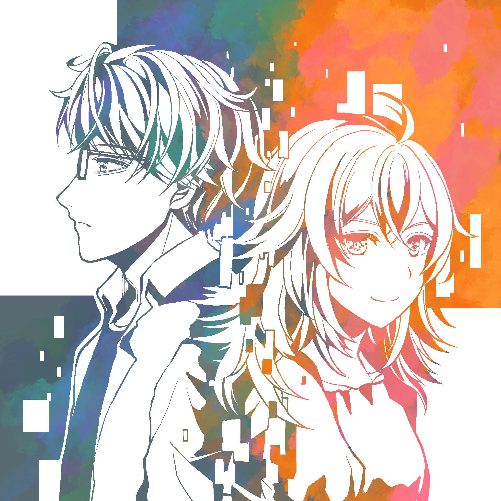
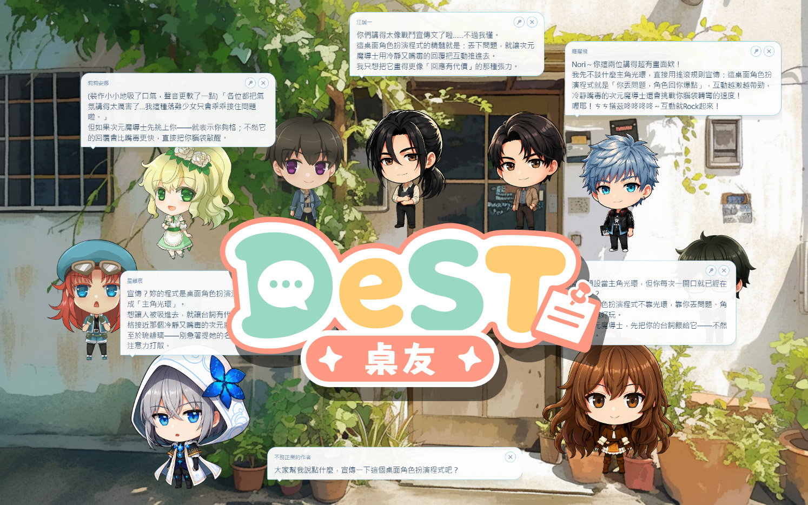
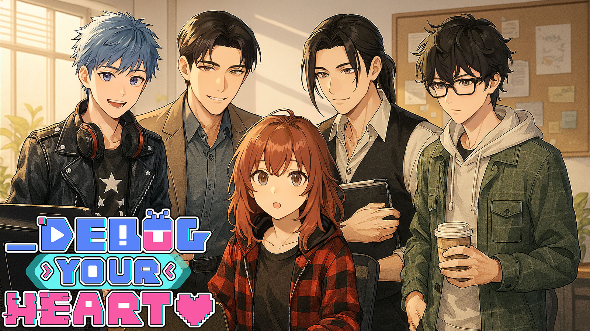
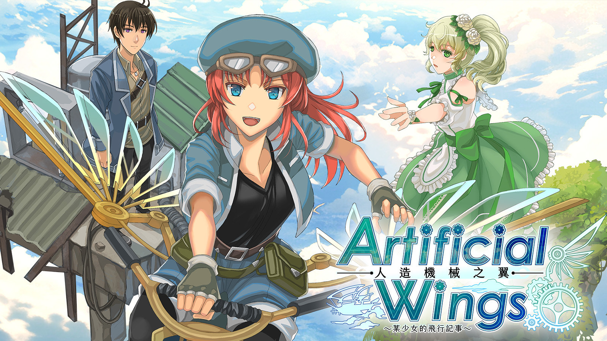

Indie
Story
獨立遊戲開發
以角色間的情感為核心的敘事遊戲

獨立遊戲開發者・技術美術
以角色間的情感為核心的敘事遊戲
Unity 經驗10年以上，擅長美術和程式之間的整合溝通，參與過遊戲專案20款以上，也多次參加GameJam
帶學生用電腦／iPad 製作繪圖作品，從小朋友到大人都有教學經驗

DeST 角色扮演程式，現在有三個版本：電腦桌面上養會聊天的 AI 角色、隨身帶著走的手機獨立版，以及跟角色扮演無關、單純好用的飲食記錄 App「食記」。


演講・課程邀約請來信：starryseaweed@gmail.com
一邊接案子過活一邊做自己想做的遊戲，但工作太忙的時候自己的遊戲就會停擺。
喜歡中性的角色、一對一情感主軸的敘事。
2021 年創立海苔遊戲工房，也是台灣女性遊戲人聚會的召集人。
具備 15 年以上遊戲業經驗，橫跨美術、UI、技術美術與程式。